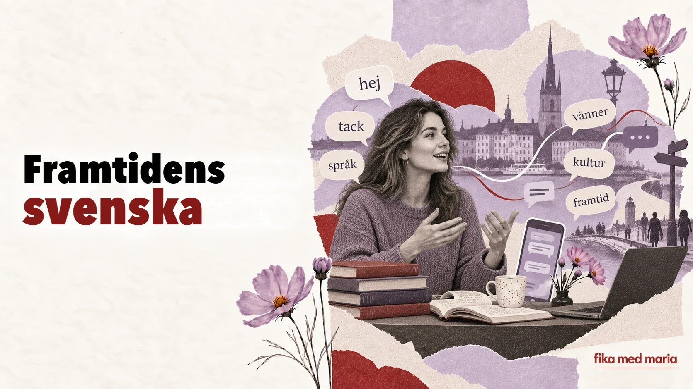

Framtidens svenska: vad engelskan, TikTok och nya generationer gör med språket

Språk beskrivs ofta som om de stod på museum. Det finns rätta ord, rätta regler och människor som försvarar allt detta mot ”förvanskning”.
Men svenskan står inte stilla. Den chattar, förändras i flerspråkiga områden, lånar in engelska verb och bråkar regelbundet med sig själv om vad som redan har blivit norm.
Engelskt ord, svensk grammatik
Ett lånord kommer inte alltid in i språket i sin ursprungliga form. Svenskan kan ta en engelsk stam och ge den sin egen grammatik.
I samtal kan man till exempel stöta på verb som har bildats av engelska ord men som böjs enligt svenskt mönster. Det visar något viktigt: ordet är inte längre bara en gäst. Det börjar leva efter det nya språkets regler.
Sådana former kan irritera dem som värnar språkets renhet, men för yngre talare kan de vara helt naturliga.
Chattar förkortar mer än bara ord
I meddelanden försvinner versaler, skiljetecken och en del av de formella hälsningsfraserna. Emojier kan ersätta den ton som intonationen skulle ha förmedlat i rösten.
Jämför:
Hej! Skulle du kunna skicka bilden när du har tid? Tack!
och
kan du skicka bilden sen? 🙏
Den andra meningen är kortare, men emojin mjukar upp begäran. Utan den kan samma text verka tvärare – beroende på relationen.
Typ, ba och asså
Ungdomsspråk och informellt tal har sin egen rytm.
- typ visar att något är ungefärligt eller fungerar som utfyllnadsord;
- ba, som hör ihop med bara, inleder ofta en reaktion eller en replik;
- asså, som kommer av alltså, kan uttrycka en förklaring, förvåning eller en känslomässig inledning.
Och jag ba: va?
Ungefär: och då sa jag: vad?
Det här är inte en mening som du bör ha med i ett formellt brev. Men om du aldrig har hört den kan delar av en tv-serie eller av ett samtal mellan tonåringar förbli obegripliga.
Hen och ett språk som söker nya lösningar
Vid sidan av han och hon används i modern svenska det könsneutrala pronomenet hen. Det kan vara lämpligt när personens kön är okänt eller oviktigt, eller när personen själv använder pronomenet.
Ett nytt ord kan först väcka het debatt och sedan bli ett vanligt redskap. Så svarar språket på nya kommunikativa behov.
Det flerspråkiga Sverige skapar också svenska
Modern svenska påverkas inte bara av engelskan och internet. Den talas varje dag av människor med olika förstaspråk. Deras barn växer upp med svenska men tillför den en annan rytm, ett annat ordförråd och andra kulturella referenser.
Urbana ungdomsspråk kan inte reduceras till ”dålig svenska”. De har egna sociala funktioner: de visar tillhörighet, närhet, humor och talarens hållning.
Samtidigt är det viktigt att du som lär dig svenska kan skilja på:
- vad du behöver förstå;
- vad du kan använda med vänner;
- vad som passar på jobbet;
- vad som är bäst att spara till just den grupp som du verkligen tillhör.
Behöver du lära dig all ny slang?
Nej. Slang förändras snabbt, och att försöka låta ”väldigt ungdomlig” ger ibland motsatt effekt.
En mer användbar strategi:
- Lär dig först att känna igen ordet.
- Se efter vem som använder det och i vilka situationer.
- För inte över det automatiskt till formellt språkbruk.
- Använd bara det som naturligt passar din ålder, din miljö och din stil.
Vem avgör vad som är rätt?
Ordböcker, språkvårdande institutioner, redaktioner och skolan beskriver och normerar språket. Men förändringarna börjar hos talarna. Om en ny form sprids, stabiliseras och fyller en funktion som behövs, går det inte längre att få bort den bara genom att bli upprörd.
Det betyder inte att det inte längre finns några regler. Det betyder att regeln beror på sammanhanget. Det som fungerar utmärkt på TikTok kan vara olämpligt i en ansökan till en myndighet – och tvärtom.
Para ihop formerna med situationerna: chatt med en vän, meddelande till en kollega, officiellt brev.
- Tja! Kan du skicka den sen?
- Hej! Kan du skicka dokumentet när du har möjlighet?
- Hej, jag skulle vilja be er att skicka dokumentet till följande adress.
Alla tre kan vara rätt. Det handlar inte bara om grammatik utan också om relationen och syftet.
Fika med Maria kombinerar språkets grunder med dagens språkbruk, så att du kan både skriva ett korrekt brev och förstå ett riktigt samtal. Välj din nivå.
Förstör anglicismer svenskan?
Lånord förändrar språket, men språkkontakter har alltid funnits. Om ett visst ord passar beror på sammanhanget.
Ska man som nybörjare lära sig slang?
Du behöver inte använda slang aktivt. Men att steg för steg lära sig känna igen vanliga talspråkliga former är mycket nyttigt för hörförståelsen.